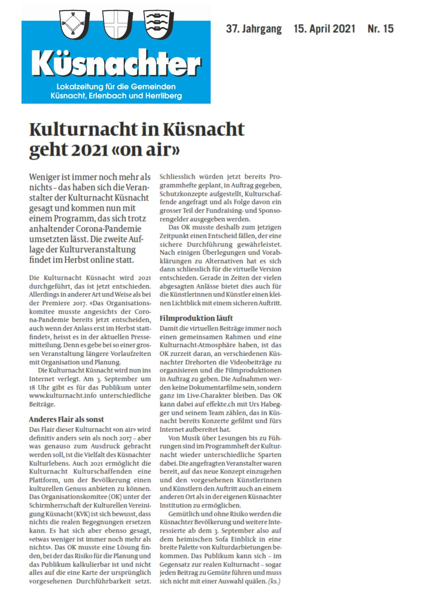

Die Kulturnacht Küsnacht 2021 am Freitag, 3. September findet definitiv statt!
Dafür bauen wir eine digitale Sicherheit ein. Die einzelnen Darbietungen werden im Verlauf des Sommers auf Video aufgenommen. Gelten im September strenge Schutzmassnahmen, können die einzelnen Beiträge sicher zuhause gestreamt werden.
Sind im September jedoch Veranstaltungen ab 50 Personen wieder möglich, organisiert das OK Kulturnacht ein Public Viewing mit Grossleinwand im Dorfzentrum.
Presse
Kontakt
Ein Ziel: Kulturnacht Küsnacht 2021on air
Fotos: Petra Helm
Die Kulturnacht wird auch unter neuen Umständen gestemmt
Die Kulturnacht Küsnacht ist ein Projekt der Kulturellen Vereinigung Küsnacht (KVK) und wird von einem Nonprofit-Team organisiert:
- Elisabeth Abgottspon, Ortsmuseum Küsnacht
- Ilka Allenspach, Kulturelle Vereinigung Küsnacht
- Hans-Peter Fehr, Theaterverein „Die Kulisse“, Küsnacht
- Christian Marty, Konservator/Restaurator, Küsnacht
- Martine Peyer, Kulturelle Vereinigung Küsnacht
- Hortensia Ernst, Vertretung Vorstand Kulturelle Vereinigung Küsnacht
- Esther Haltiner, Vertretung Vorstand Kulturelle Vereinigung Küsnacht
Durch eine Mitgliedschaft unterstützen Sie die Aktivitäten der KVK. E-Mail an: vorstand@kulturelle-vereinigung-kuesnacht.ch